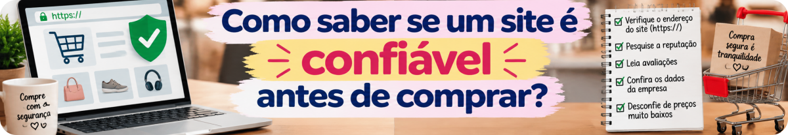
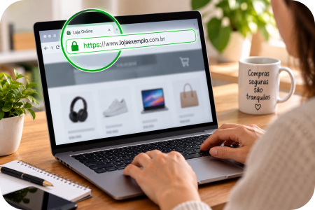
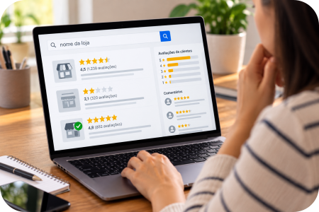

Você encontra aquele produto que estava procurando. O preço parece bom, o site é bonito e existe um enorme botão escrito “Comprar agora”.
Mas você nunca ouviu falar daquela loja.
A dúvida aparece: “Será que esse site é confiável?”
Um site bem-feito, sozinho, não é garantia de segurança. Golpistas podem copiar logotipos, fotografias, anúncios e até criar páginas muito parecidas com as de empresas verdadeiras.
Por isso, antes de comprar, vale fazer algumas verificações.
1. Confira o endereço do site com atenção

Não olhe apenas para o nome e o logotipo da página.
Confira o endereço que aparece na barra do navegador. Sites falsos podem usar endereços muito parecidos com os verdadeiros, alterando uma letra, acrescentando uma palavra ou utilizando outro domínio.
Se você chegou à loja por um anúncio, mensagem ou link recebido, tenha ainda mais atenção.
Quando estiver procurando uma empresa conhecida, prefira confirmar qual é o endereço oficial antes de informar dados ou realizar o pagamento.
2. Pesquise a reputação da loja

Antes de comprar em uma loja desconhecida, pesquise o nome da empresa junto com palavras como:
reclamação • golpe • problema • não entregou
Veja se existem relatos de outros consumidores e procure informações sobre a empresa fora do próprio site que está sendo analisado.
Também vale consultar o Consumidor.gov.br quando a empresa participa da plataforma. O serviço público permite a interlocução direta entre consumidores e empresas cadastradas.
3. Consulte a lista “Evite esses Sites” do Procon-SP
Existe uma ferramenta especialmente útil para essa verificação.
O Procon-SP mantém a lista “Evite esses Sites”, que reúne endereços eletrônicos que tiveram reclamações de consumidores e cujos responsáveis não responderam ou não foram localizados.
Não encontrar uma loja nessa lista não significa automaticamente que ela seja confiável. Mas encontrá-la ali é um sinal importante para não prosseguir com a compra.
4. Desconfie de preço bom demais
Encontrar uma promoção é ótimo.
Encontrar um produto por um valor muito abaixo de praticamente todas as outras lojas merece investigação.
Compare o mesmo produto em outros lugares antes de decidir. Uma diferença de preço grande demais pode ser um alerta, principalmente quando vem acompanhada de pressa para pagar.
Isso conversa diretamente com nossa primeira Dica da Lu: desconto grande não é sinônimo de boa compra.
5. Observe as informações sobre a empresa
Procure no site informações que permitam identificar e contatar o vendedor.
Veja se existem canais de atendimento, informações claras sobre entrega, troca e devolução e dados sobre a empresa responsável pela venda.
E não confie apenas porque essas informações estão escritas na página: se alguma coisa parecer estranha, pesquise os dados fora daquele próprio site.
6. Tenha cuidado com o pagamento
Antes de pagar, confira novamente onde você está e as informações apresentadas na tela.
Se a compra começou em uma plataforma conhecida e alguém tentar tirar a negociação dali para receber pagamento por mensagem, link ou outro canal, desconfie.
Também tenha cuidado com cobranças posteriores alegando supostas taxas para “liberar”, “destravar” ou “reenviar” uma encomenda.
7. O cadeado não resolve tudo
Ver o cadeado e o HTTPS é importante para saber que a conexão com aquela página está protegida, mas isso, sozinho, não prova que a loja seja honesta.
Não use a regra “tem cadeado = pode comprar”.
Uma página fraudulenta também pode utilizar HTTPS. Por isso, o endereço correto, a reputação da empresa, as informações da loja, o preço, a forma de pagamento e o contexto da compra precisam ser analisados em conjunto.
Antes de comprar, faça o teste da Lu 💕
Passe por estes pontos antes de finalizar a compra:
Levou alguns minutos para conferir tudo? Ótimo. Esses minutos podem valer muito mais do que a pressa de aproveitar uma suposta promoção.
💕 Dica da Lu
Como consumidora, esse é um cuidado que eu também tenho: quando não conheço a loja, pesquiso antes de comprar.
Aqui no Mundo LuFiNas, a gente gosta de encontrar preço bom. Mas preço bom sem segurança não é economia.
Não deixe que a pressa, um desconto enorme ou a aparência bonita de uma página decidam por você.
Comprar melhor também é saber a hora de não comprar.
Mundo LuFiNas — a gente pesquisa. Você escolhe melhor.
Fontes e ferramentas úteis
Procon-SP — Evite esses Sites — ferramenta para consulta de sites que devem ser evitados.
Consumidor.gov.br — serviço público para interlocução entre consumidores e empresas participantes.
Receita Federal — orientações sobre golpes em compras — cuidados com sites, pagamentos e falsas cobranças.
Polícia Federal — Cartilhas de Segurança da Informação — orientações de prevenção em comércio via internet.
As páginas, condições de venda e informações de empresas podem mudar. Antes de comprar, confira os dados nos canais oficiais.